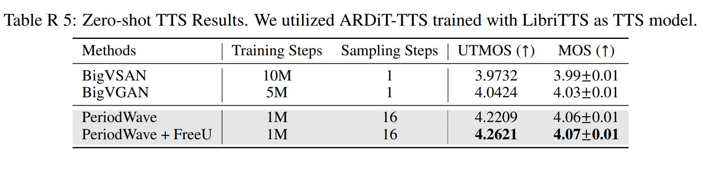

PeriodWave: Multi-Period Flow Matching for High-Fidelity Waveform Generation
Abstract
Recently, universal waveform generation tasks have been investigated conditioned on various out-of-distribution scenarios.
Although one-step GAN-based methods have shown their strength in fast waveform generation, they are vulnerable to train-inference mismatch scenarios such as two-stage text-to-speech.
Meanwhile, diffusion-based models have shown their powerful generative performance in other domains; however, they stay out of the limelight due to slow inference speed in waveform generation tasks.
Above all, there is no generator architecture that can explicitly disentangle the natural periodic features of high-resolution waveform signals.
In this paper, we propose PeriodWave, a novel universal waveform generation model from Mel-spectrogram and neural audio codec.
First, we introduce a period-aware flow matching estimator that effectively captures the periodic features of the waveform signal when estimating the vector fields.
Additionally, we utilize a multi-period estimator that avoids overlaps to capture different periodic features of waveform signals.
Although increasing the number of periods can improve the performance significantly, this requires more computational costs.
To reduce this issue, we also propose a single period-conditional universal estimator that can feed-forward parallel by period-wise batch inference.
Additionally, we first introduce FreeU to reduce the high-frequency noise for waveform generation.
Furthermore, we demonstrate the effectiveness of the proposed method in neural audio codec decoding task, and present the streaming generation framework of non-autoregressive model for speech language models.
The experimental results demonstrated that our model outperforms the previous models in reconstruction tasks from Mel-spectrogram and discrete token, and text-to-speech tasks.
To further demonstrate the effectiveness of our model for two-stage TTS, we added the results for multi-speaker zero-shot TTS. We utilized an autoregressive diffusion transformer-based zero-shot TTS model, ARDiT-TTS for TTS model which used the same configuration of Mel-spectrogram for 24 kHz audio.
We requested the generated Mel-spectrogram of ARDiT-TTS from the authors and they kindly sent us the Mel-spectrogram of 500 samples for the LibriTTS-test-subsets.
We have attached the UTMOS results for each vocoder, and we will conduct the MOS for this experiment.
Although GAN-based models have shown their powerful generative performance for the original Mel-spectrogram converted from GT audio, these results show that they have low robustness for the generated Mel-spectrogram from the TTS models. We used the official implementation and checkpoints of BigVGAN and BigVSAN.

UTMOS results for zero-shot TTS (500 samples).
We conducted experiments for parallel and streaming generation from discrete tokens. We used Mimi of Moshi, a state-of-the-art neural audio codec that operates at 12.5 Hz.
Note that the number of codebooks in Mimi can be up to 32, but Moshi utilized a Q=8 quantizer for speech language models, so we also used the same discrete tokens from the eight quantizer as an input to our model instead of Mel-spectrogram.